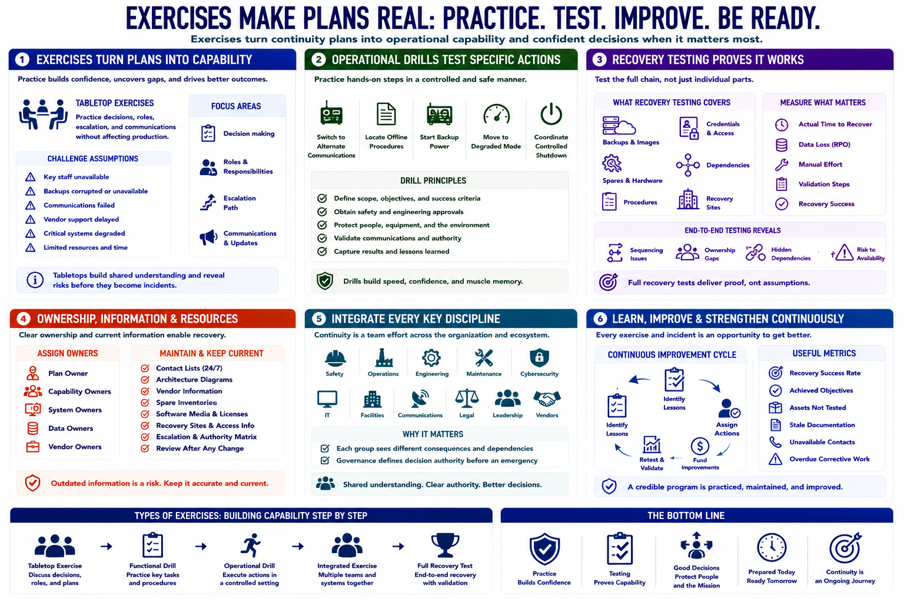

Exercises, Governance, and Continuous Improvement
Connecting to LMS... Progress: in progress

Narration
Exercises turn continuity plans into operational capability. Tabletop exercises let teams practice decisions, roles, escalation, and communications without affecting production. Scenarios should challenge assumptions such as unavailable staff, corrupted backups, failed communications, or delayed vendor support.
Operational drills test specific actions: switching to alternate communications, locating offline procedures, starting backup power, moving to degraded mode, or coordinating a controlled shutdown. Scope drills carefully with safety and engineering approval.
Recovery testing proves that backups, spares, procedures, credentials, and dependencies work together. Measure actual time, data loss, manual effort, and validation steps. Testing isolated components is useful, but end-to-end exercises reveal sequencing and ownership gaps.
Assign a plan owner and owners for every recovery capability. Maintain contact lists, architecture diagrams, vendor information, spare inventories, software media, licenses, and recovery sites. Review after personnel, process, equipment, network, or supplier changes.
Integrate safety, operations, engineering, maintenance, cybersecurity, IT, facilities, communications, legal, leadership, and relevant vendors. Each group sees different consequences and dependencies. Governance should resolve decision authority before an emergency.
After every exercise and incident, record lessons, assign actions, fund improvements, and retest. Useful metrics include recovery success, achieved objectives, untested assets, stale documentation, unavailable contacts, and overdue corrective work. A continuity program remains credible only when it is practiced, maintained, and improved.